왼쪽 세로형 바에서 1번째, 노란색 박스에 위치한 아이콘을 클릭합니다.
화면 왼쪽 세로형 내비게이션 바에서 가장 위의 1번째 아이콘을 찾습니다. 노란색 박스로 강조되어 있습니다.
아이콘을 한 번 클릭하면 Image Generator 작업 화면이 열립니다.
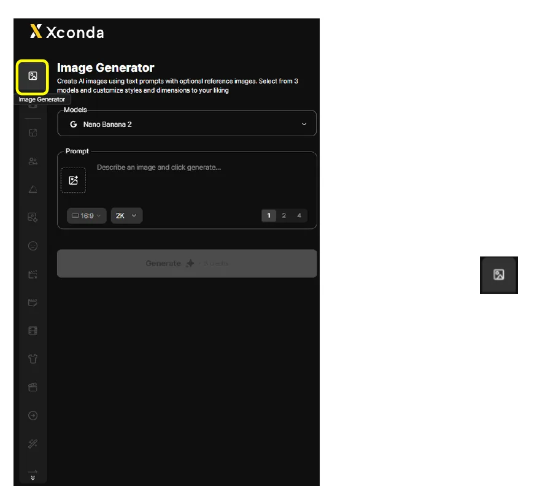
이미지 생성에 사용할 AI 모델을 선택합니다. 7가지 모델 중 하나를 선택할 수 있습니다.
7가지 모델은 각각 레퍼런스 이미지 첨부 가능 장수, 텍스트 정확도, 결과물의 질감 등이 다릅니다. 첫 번째 그룹의 3가지 모델을 먼저 소개합니다. 나머지 모델은 다음 페이지에서 이어집니다.
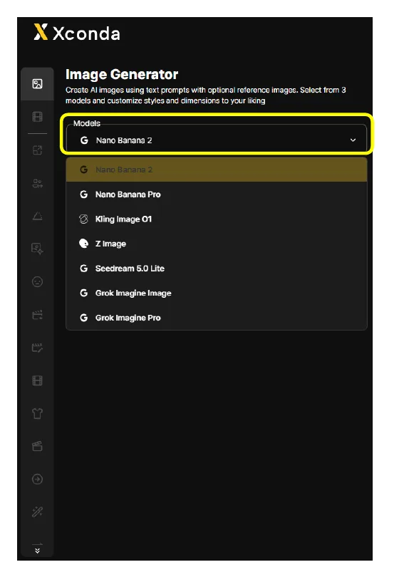
빈칸을 클릭하여 생성하고자 하는 이미지를 텍스트로 설명합니다. 프롬프트는 필수 항목입니다.
Prompt 빈칸을 한 번 클릭하여 생성하고자 하는 이미지를 텍스트로 설명합니다.
영어로 작성하면 더 정확한 결과를 얻을 수 있습니다.
이전에 사용했을 경우 마지막 프롬프트가 적용됩니다.
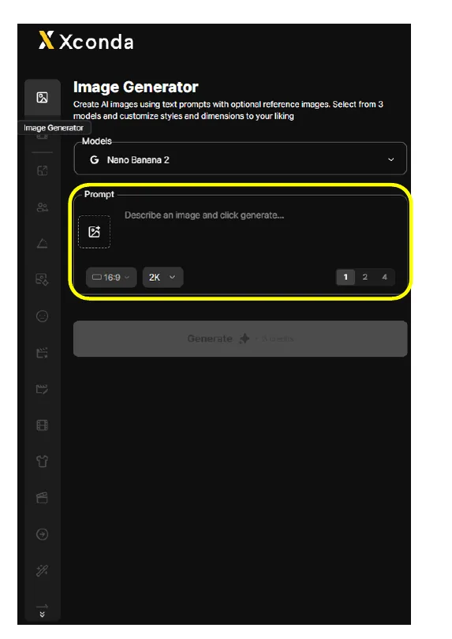
나머지 4가지 모델의 특징을 확인합니다.
Z Image는 네거티브 프롬프트를 지원하는 유일한 모델로, 원하지 않는 요소를 명시적으로 제외할 수 있습니다. Seedream과 Grok Imagine 계열은 각자의 특성에 맞는 콘텐츠에 적합합니다.
자주 사용하는 레퍼런스 이미지를 저장해 두고 반복 사용하기 위해 상단 메뉴에서 Library로 이동합니다.
화면 우측 상단의 계정 메뉴를 클릭하여 드롭다운 메뉴(Pricing, Library, QNA, Language, Log out)를 엽니다.
노란색 박스로 강조된 Library 항목을 클릭하면 전용 에셋 보관함 화면으로 이동합니다.
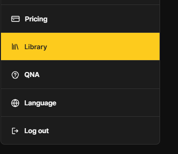
Library의 Uploads 탭에서 + Add asset을 클릭해 사용할 에셋의 이름, 설명, 미디어 파일을 등록합니다.
New Asset 창 좌측에 에셋 이름(Enter asset name, 최대 100자)과 설명(Add description, 최대 500자)을 입력합니다.
우측 Upload media 점선 영역을 클릭하거나 파일을 드래그하여 업로드한 뒤, 하단의 Create 버튼을 눌러 저장합니다.
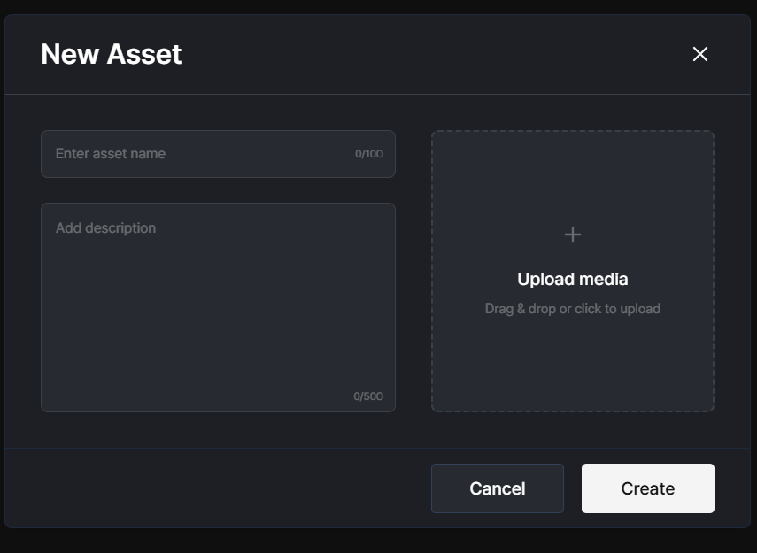
Uploads 탭에 등록된 에셋을 확인하고 다운로드하거나 삭제할 수 있습니다.
Uploads 탭에서 + Add asset으로 추가한 에셋 카드(예: '미켈란젤로 천지창조')를 확인합니다. 우측 Generations 탭에서는 생성된 이미지들을 모아볼 수 있습니다.
각 에셋 카드 우측 하단의 다운로드 아이콘을 눌러 원본을 저장하거나, 휴지통 아이콘을 눌러 보관함에서 삭제할 수 있습니다.
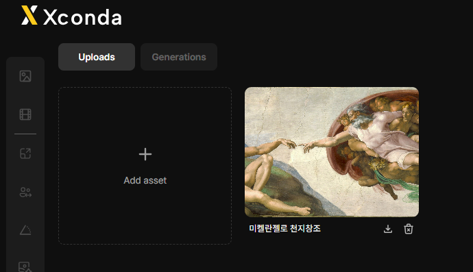
Image Generator의 Input Assets 영역에서 레퍼런스를 추가하거나 우측 관리 패널을 엽니다.
좌측 Input Assets 영역의 + Reference 버튼 또는 우측 상단 Manage >를 클릭하면 화면 오른쪽에 에셋 관리 패널이 열립니다.
우측 패널의 Reference 탭에서 + Add를 클릭해 현재 작업에만 사용할 이미지를 업로드합니다. 체크된 에셋은 @Image1, @Image2 형태로 번호가 부여됩니다.
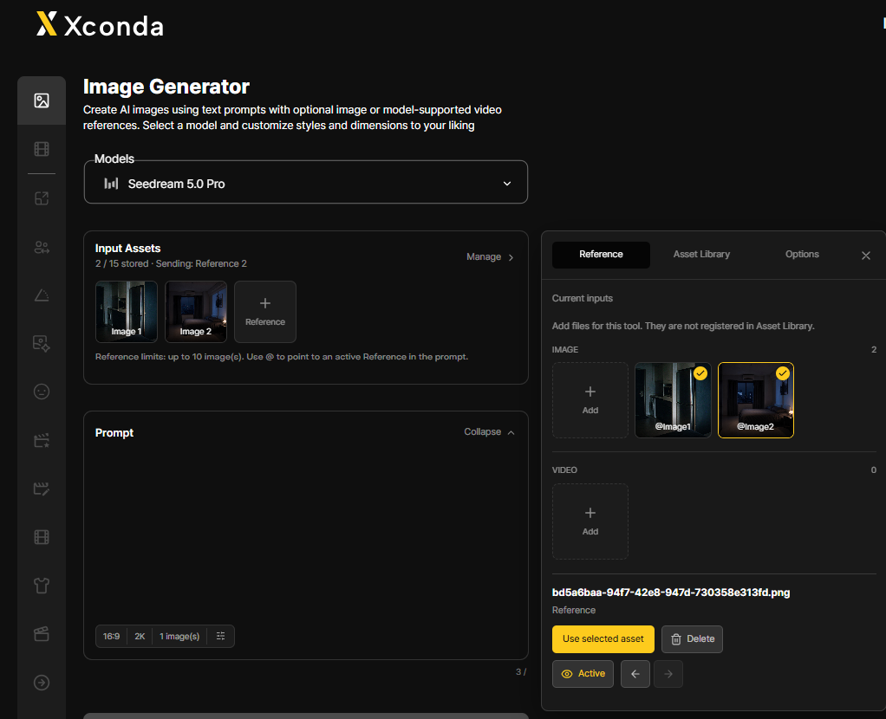
Asset Library 탭에서 저장해 둔 에셋을 선택해 불러오고, 프롬프트에서 @Image 태그로 참조합니다.
우측 패널 상단의 Asset Library 탭을 클릭한 뒤, Saved assets 목록에서 사용할 이미지를 선택하고 하단의 노란색 Use selected assets 버튼을 클릭합니다.
선택한 에셋이 Input Assets에 추가(3 / 15 stored · Sending: Reference 3)되며 @Image3가 부여됩니다. 하단의 Active 버튼으로 활성화 여부를 켜고 끄거나, 화살표(← →)로 번호 순서를 바꾸고, 프롬프트에서 @Image1~@Image3를 입력해 호출합니다.
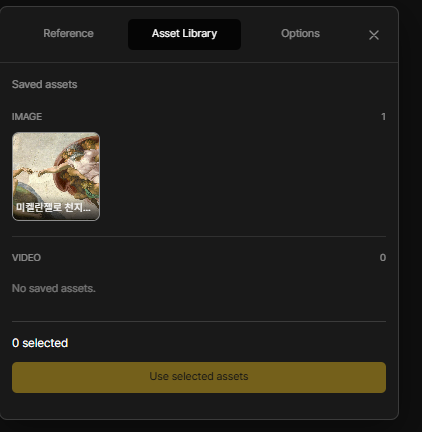
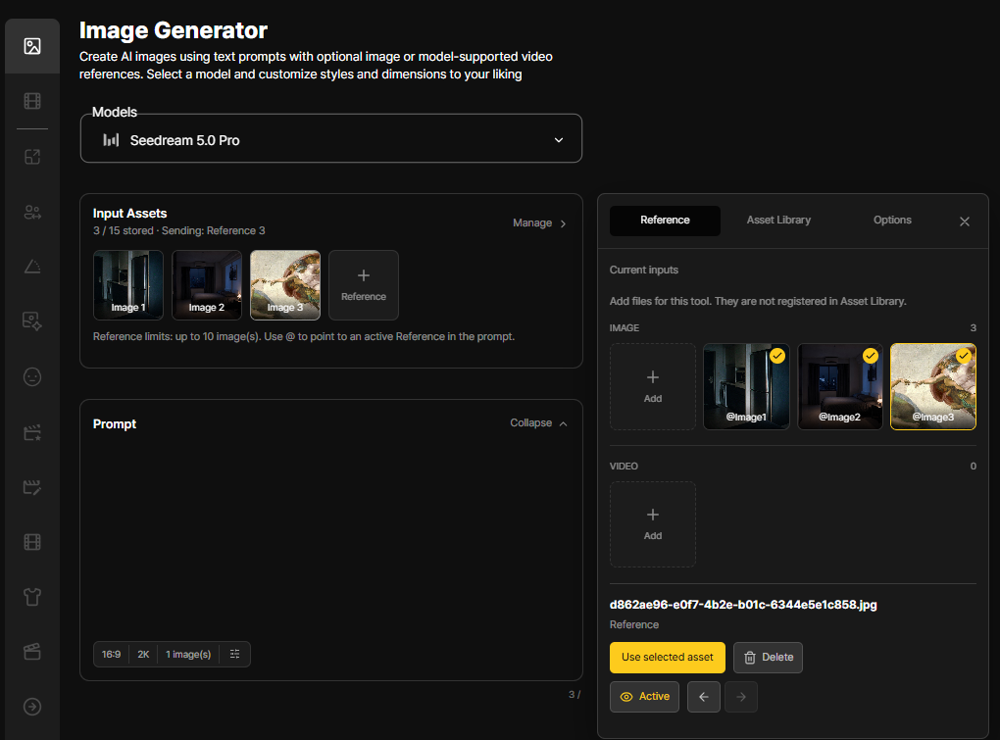
프롬프트 입력란 왼쪽의 점선 박스 아이콘을 클릭하여 레퍼런스 이미지를 첨부합니다.
프롬프트 입력란 왼쪽의 점선 박스 아이콘을 클릭하여 레퍼런스 이미지를 첨부합니다.
첨부된 이미지는 프롬프트 내에서 @image1, @image2 ... 형태로 표시되며, 프롬프트에서 각 이미지를 참조할 수 있습니다.
레퍼런스 이미지는 선택 사항입니다. 첨부하지 않아도 텍스트만으로 생성할 수 있습니다.
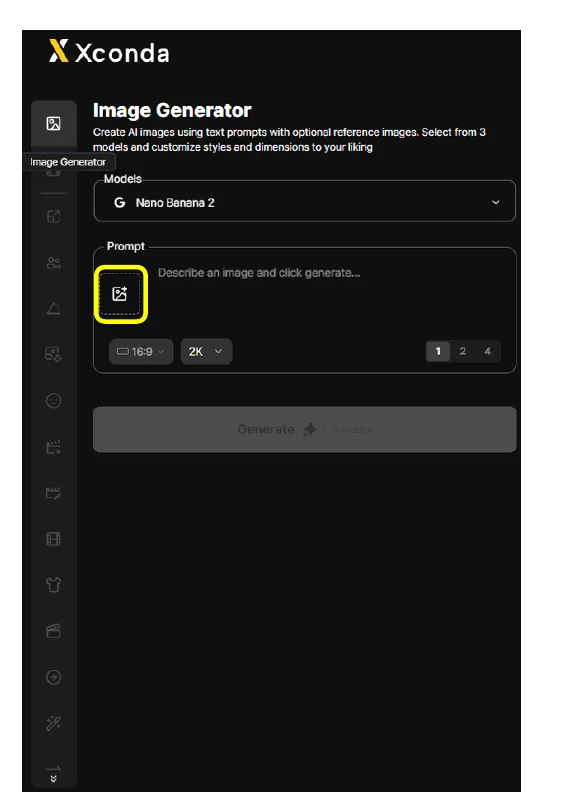
각 모델별 레퍼런스 이미지 최대 첨부 장수가 다릅니다.
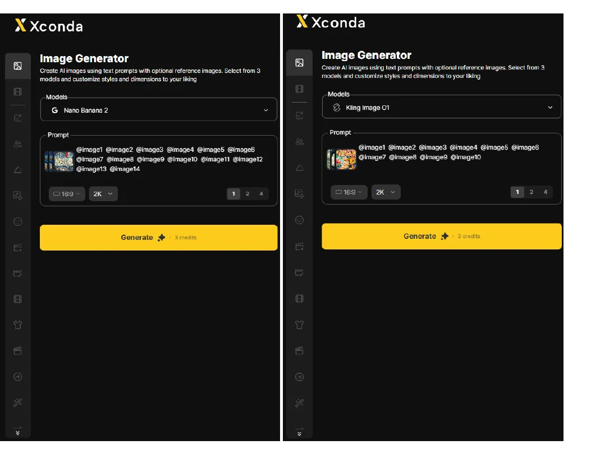
Z Image와 Seedream 5.0 Lite의 첨부 장수입니다.
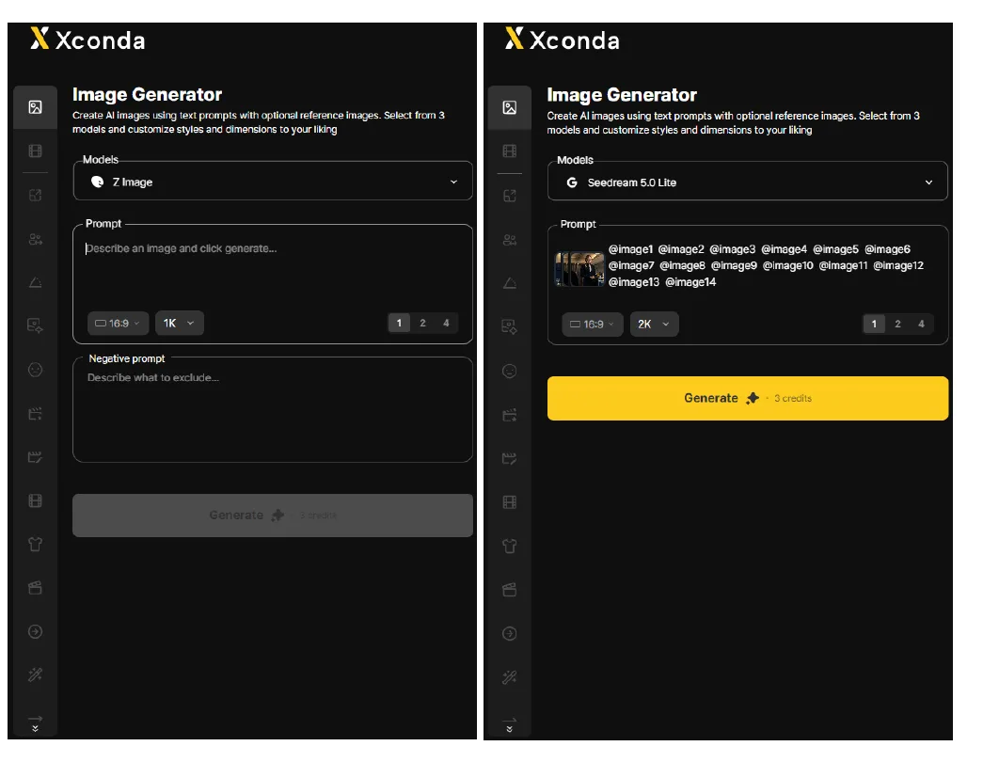
Grok Imagine 계열의 첨부 장수입니다.
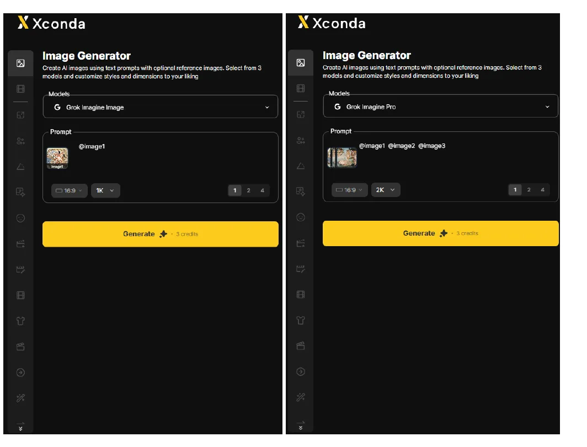
프롬프트 입력란 아래 왼쪽의 비율 버튼을 클릭하면 12가지 비율 중 선택할 수 있습니다.
12가지 비율은 영상, SNS, 인쇄물 등 출력 매체에 맞춰 선택합니다. 가장 일반적으로 사용되는 비율은 16:9 (가로형 와이드), 9:16 (세로형), 1:1 (정사각형)입니다.
선택한 모델에 따라 지원되는 비율이 다를 수 있습니다. 모델 변경 시 이전에 선택한 비율이 지원되지 않으면 자동으로 기본값으로 조정될 수 있으니, 모델 선택 후 비율을 다시 확인합니다.
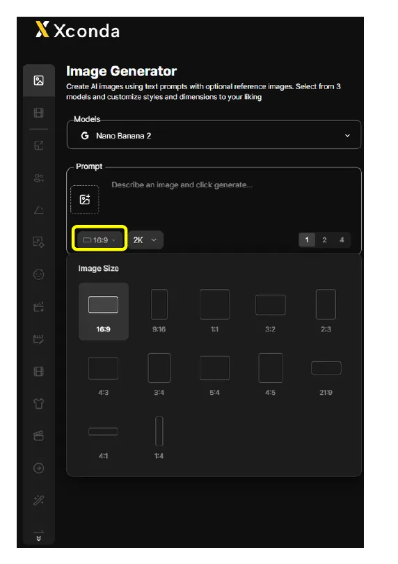
비율 버튼 옆의 해상도 드롭다운을 클릭하면 3가지 해상도 중 선택할 수 있습니다.
선택한 모델에 따라 지원되는 해상도가 다릅니다. Z Image는 1K만 지원하며, 다른 모델은 1K · 2K · 4K 중에서 선택할 수 있습니다. 모델별 기본 해상도 또한 다를 수 있으니 모델 선택 후 해상도를 다시 확인합니다.
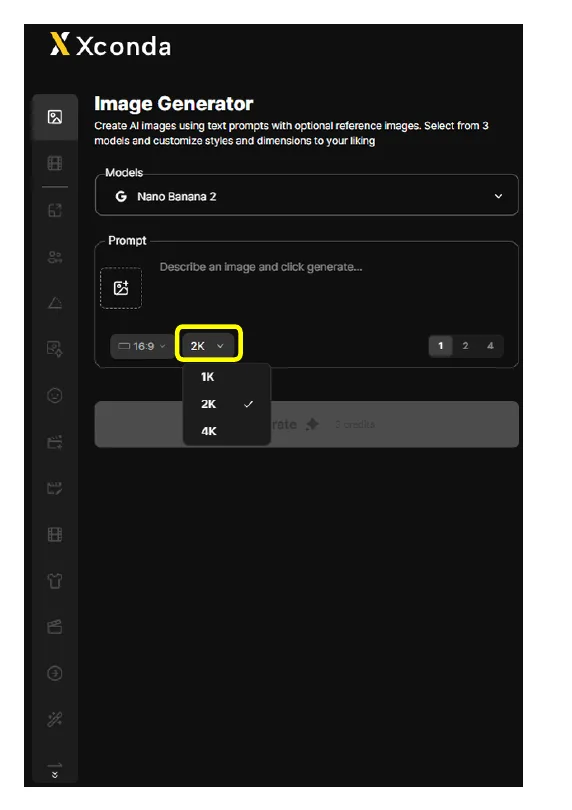
해상도 옆의 숫자 버튼에서 한 번에 생성할 이미지 수를 선택합니다.
3가지 옵션 중 작업 목적에 맞는 것을 선택합니다.
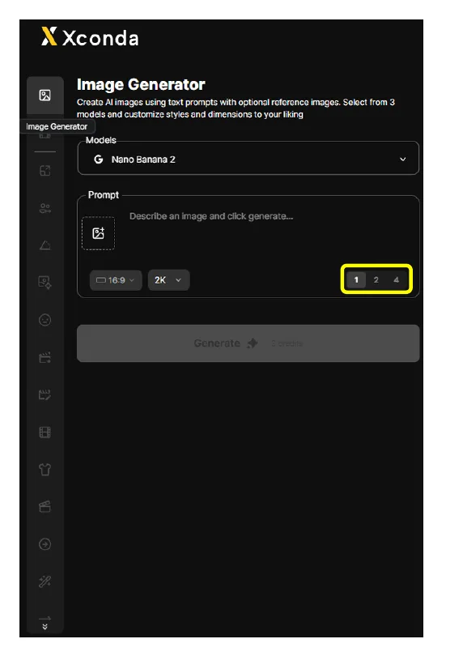
Z Image 모델 선택 시 프롬프트 아래에 Negative prompt 입력란이 추가로 나타납니다.
Z Image 모델을 선택했을 때만 Negative prompt 입력란이 추가로 나타납니다.
생성 결과물에서 제외하고 싶은 요소를 텍스트로 입력합니다.
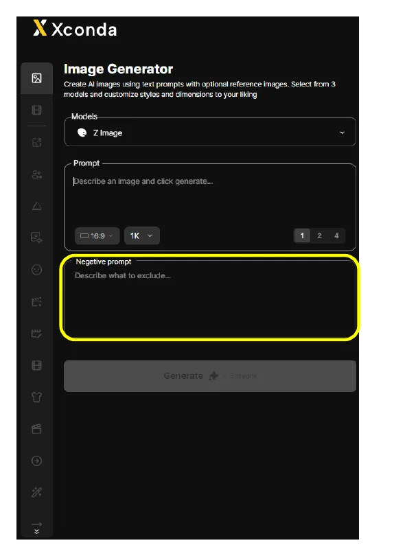
모든 설정을 완료한 후 하단의 노란색 Generate 버튼을 클릭합니다.
모든 설정을 완료한 후 하단의 노란색 Generate 버튼을 클릭합니다. 버튼에 표시된 크레딧이 소모되며 이미지 생성이 시작됩니다.
프롬프트가 입력되어야 버튼이 활성화됩니다. 이전에 사용했을 경우 마지막 프롬프트가 적용됩니다.
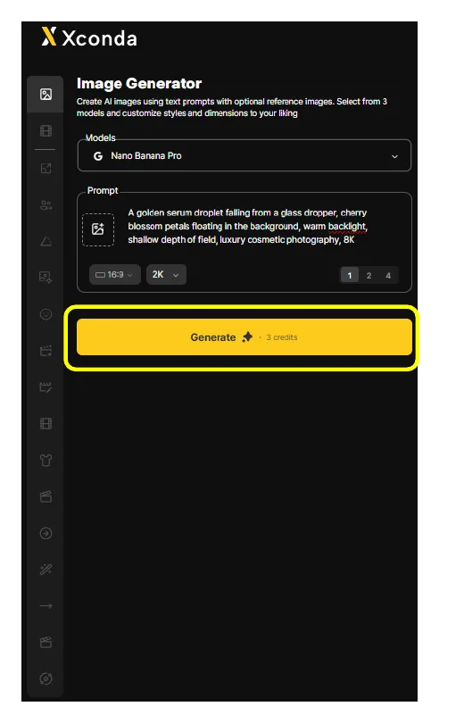
생성이 완료되면 화면 오른쪽에 결과 이미지가 표시됩니다.
생성이 완료되면 화면 오른쪽에 결과 이미지가 표시됩니다.
4장 생성 시 번호(1, 2, 3, 4)가 매겨진 썸네일이 가로로 나열됩니다.
각 결과물 아래에는 사용된 프롬프트가 함께 표시됩니다.
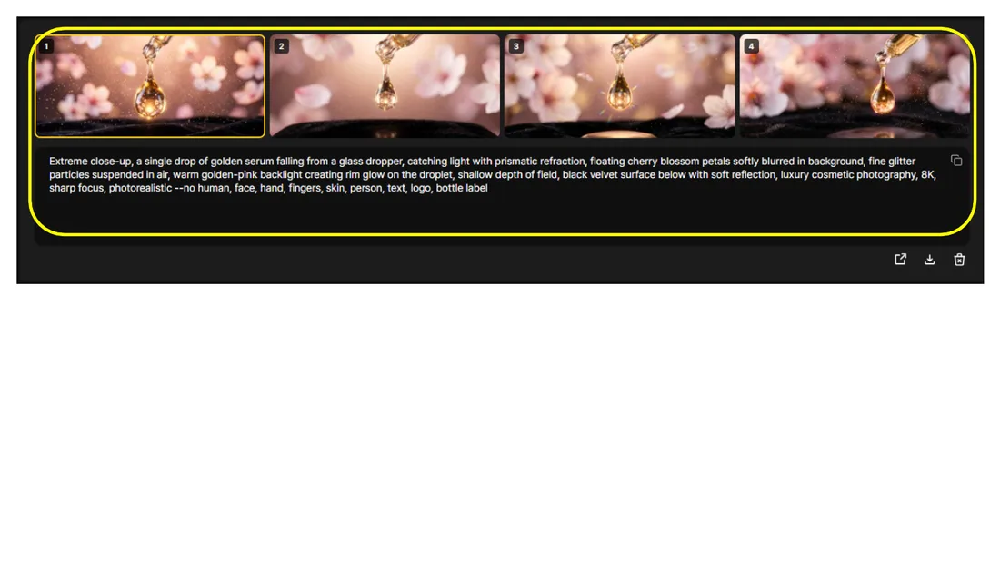
결과물 아래에 표시된 프롬프트 텍스트의 오른쪽 상단에 복사 아이콘이 있습니다.
결과물 아래의 프롬프트 텍스트 오른쪽 상단에 위치한 복사 아이콘을 클릭합니다.
클릭하면 해당 프롬프트가 클립보드에 복사되어, 동일한 프롬프트로 재생성하거나 다른 모델에서 활용할 수 있습니다.
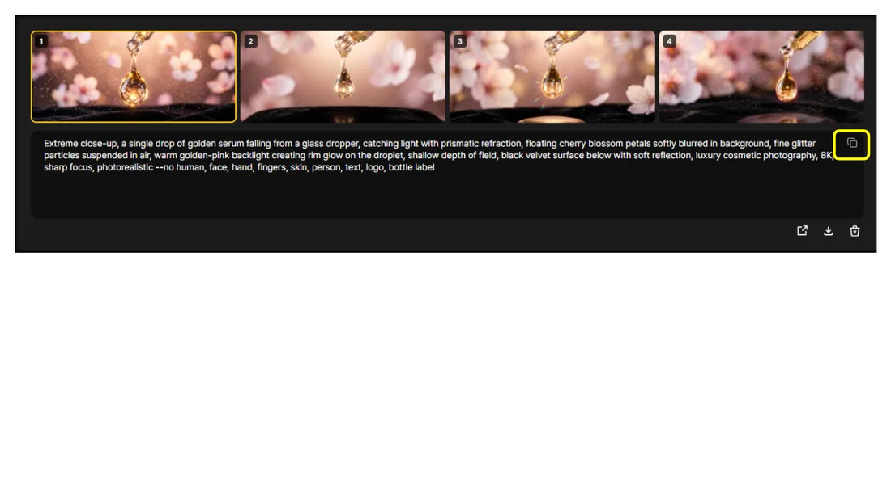
썸네일을 클릭하면 이미지가 전체 화면으로 확대됩니다.
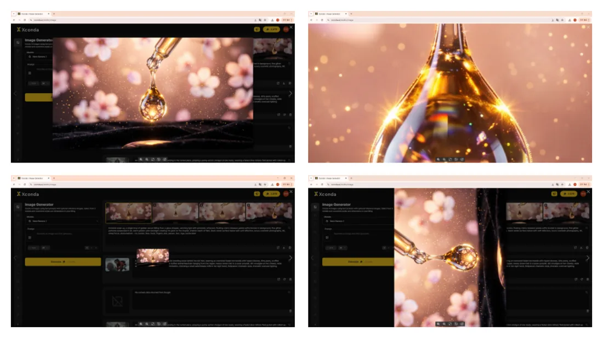
좌우 화살표 (< >)를 클릭하면 다른 생성 결과물로 이동할 수 있습니다.
하단 툴바에서 확대 / 축소 조작이 가능합니다.
하단 툴바에서 좌우 방향으로 90도 회전이 가능합니다.
각 결과물의 오른쪽 하단에 3개의 아이콘이 있습니다.
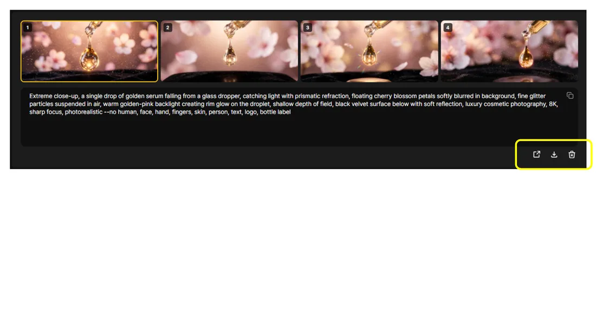
결과물 우측 하단의 3개 아이콘으로 새 창에서 열기, 다운로드, 삭제를 수행할 수 있습니다.
첫 번째 아이콘을 클릭하면 이미지가 새 창에서 열립니다.
두 번째 아이콘(↓)을 클릭하면 이미지가 다운로드됩니다.
세 번째 아이콘(휴지통)을 클릭하면 이미지가 삭제됩니다.